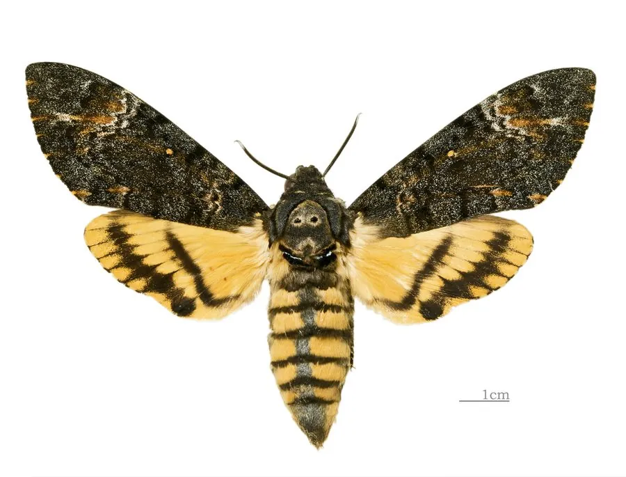

昆虫 · 动物界
芝麻鬼脸天蛾 Acherontia styx

胸部背面有骷髅状斑纹的大型天蛾，能潜入蜂巢取蜜，幼虫取食芝麻与茄科植物，中国南方至东南亚常见。
- 分类
- 门节肢动物门纲昆虫纲目鳞翅目科天蛾科属鬼脸天蛾属
- 栖息环境
- 农田、村落、林缘和灌丛，芝麻与茄科作物附近
- 地理分布
- 中国南方至华北南部，以及南亚、东南亚
- 保护级别
- 尚无保护级别；为芝麻产区的常见害虫
物种志
芝麻鬼脸天蛾的翅展约九至十二厘米，前翅黑褐色，密布细密的波状横纹和黄色鳞粉，后翅黄色，有两条粗大的黑色横带。它最醒目的特征是胸部背面有一块淡黄色的斑纹，形状酷似一张骷髅脸，两眼、鼻和下颌俱全，鬼脸天蛾之名由此而来。腹部宽大，有黄黑相间的横带，成虫能发出吱吱的鸣声。
它分布于中国南方、南亚和东南亚，北至华北南部，栖息在农田、村落、林缘和灌丛，成虫夜间活动，飞行迅速，嗜食蜂蜜，能凭借气味找到蜂巢，靠坚厚的体壁和身上的气味混入蜂群取蜜。幼虫以芝麻、茄科和豆科植物为食，尤其喜欢芝麻和马铃薯，卵单产于叶片背面，幼虫取食叶片，化蛹于土中，一年发生一至三代，以蛹越冬。它是芝麻产区的常见害虫，尚无保护级别，防治以农业措施为主。
形态与习性
- 翅展约九至十二厘米，前翅黑褐有波状横纹
- 识别胸部背面有骷髅状淡黄斑纹
- 后翅黄色底上有两条粗大黑色横带
- 食性幼虫取食芝麻、茄科和豆科植物
- 特殊习性成虫潜入蜂巢取蜜，能发出吱吱鸣声
- 发生世代一年一至三代，以蛹在土中越冬
趣味知识
- 它胸前的斑纹像一张骷髅脸，是自然界里少见的图案。
- 成虫会循着蜂蜜的气味找到蜂巢，靠厚实的体壁混进去偷蜜。
- 被抓住时它会摩擦口器发出吱吱声，像在抗议。